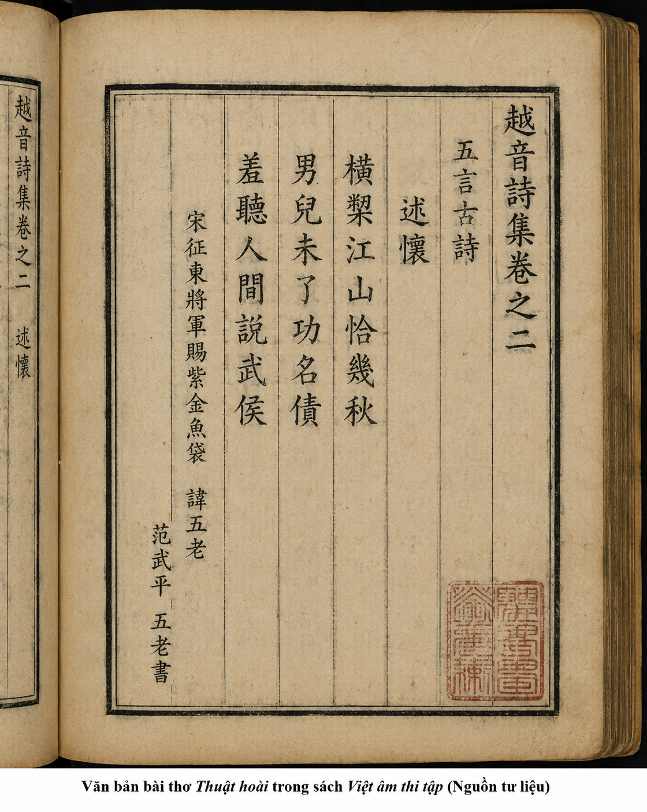

📌 LỜI DẪN & YÊU CẦU CẦN ĐẠT
"Viết báo cáo nghiên cứu về một vấn đề văn học trung đại đòi hỏi người viết không chỉ nắm vững kiến thức lịch sử văn học, tác giả và phong cách nghệ thuật, mà còn phải biết vận dụng linh hoạt các phương pháp thao tác luận chứng, trích dẫn quy chuẩn và diễn đạt rõ ràng. Bài học này sẽ hướng dẫn bạn các bước chi tiết để xây dựng một báo cáo khoa học chuẩn mực và tự tin thuyết trình kết quả nghiên cứu."
Yêu cầu cần đạt:
- Biết vận dụng những hiểu biết về lịch sử văn học, về tác giả và phong cách nghệ thuật của tác giả, về đặc điểm của các thể loại,... để thực hiện đề tài, vấn đề nghiên cứu của mình.
- Biết huy động các tri thức, kỹ năng, phương pháp, trải nghiệm,... để viết được báo cáo về một vấn đề văn học trung đại Việt Nam.
I CÁCH TRIỂN KHAI BÁO CÁO
1 Nghiên cứu theo hướng "giải mã, phân tích giá trị của một tác phẩm hoặc đoạn trích văn học trung đại"
Các bước thực hiện chuẩn bị và lập đề cương:
a) Chuẩn bị: Kiểm tra lại, hệ thống hóa kết quả thu thập ngữ liệu; xác định, sắp xếp các ý kiến trích dẫn theo từng nhóm vấn đề.
Giới thiệu tác giả (họ tên, năm sinh/mất, tên hiệu, quê quán, thời đại, sự nghiệp...); Giới thiệu khái quát tác phẩm, văn bản gốc, bản dịch...
Lịch sử nghiên cứu; Thể loại, cấu trúc, ngôn ngữ; Đề tài, chủ đề, cảm hứng; Phân tích nội dung nổi bật; Mối liên hệ lịch sử & nghệ thuật.
Khẳng định giá trị đặc sắc của tác phẩm; Đề xuất hướng nghiên cứu tiếp theo; Lập danh mục Tài liệu tham khảo đúng quy chuẩn.
c) Viết & Chỉnh sửa: Dùng từ ngữ chuẩn xác, thuật ngữ khoa học, đại từ trung tính, trích dẫn đúng quy cách, phối hợp sơ đồ/hình ảnh minh họa.
📄 Tư liệu nghiên cứu 1: Bài thơ "Thuật hoài" của Trần Quang Khải - Tác phẩm tiêu biểu cho hào khí Đại Việt thời Trần

Hình 1: Văn bản bài thơ Thuật hoài trong sách Việt âm thi tập (Nguồn tư liệu)
I. Lý do chọn đề tài & Mục tiêu:
Thuật hoài (Trần Quang Khải) là tác phẩm tiêu biểu cho cảm hứng yêu nước thời Trần. Việc giải mã văn bản giúp hiểu sâu hơn về văn học yêu nước và rèn luyện kỹ năng đọc hiểu tác phẩm cổ.
II. Tác giả, Hoàn cảnh & Khảo luận Nhan đề:
• Trần Quang Khải (1241–1294): Tướng quốc Thái úy, văn võ kiêm toàn. Sáng tác sau chiến thắng giải phóng Thăng Long (09/07/1285).
• Các dị bản nhan đề: Thuật hoài (Việt âm thi tập), Tụng giá hoàn kinh sư (Toàn Việt thi lục), Chương Dương độ (Trần triều thế phả hành trạng). Nhan đề Thuật hoài mang tính quy phạm cao nhất, sát hợp với đặc trưng thi pháp "tỏ chí, tỏ lòng" trung đại.
III. Giải mã nội dung & Nghệ thuật:
• Hai câu đầu: "Đoạt sóc Chương Dương độ / Cẩm Hồ Hàm Tử quan" – Sử dụng động từ mạnh ("đoạt", "cầm") ở đầu câu, thể hiện tư thế chủ động, âm hưởng dồn dập hào hùng.
• Hai câu sau: "Thái bình tu trí lực / Vạn cổ cựu giang san" – Quan hệ tăng tiến biện luận: Thắng lợi rồi vẫn phải dốc hết sức (trí lực) để giữ vững cõi bờ muôn đời. Chữ "cựu" (cũ, truyền thống) sâu sắc hơn chữ "thử" (này).
❓ Câu hỏi tìm hiểu: Vì sao nhan đề "Thuật hoài" lại có tính quy phạm và sát hợp hơn nhan đề "Tụng giá hoàn kinh sư"?
Trả lời:
1. Việt âm thi tập là tuyển tập thơ chữ Hán cổ nhất hiện còn chép bài thơ này dưới nhan đề Thuật hoài.
2. Về thi pháp, nhan đề Thuật hoài (Bày tỏ nỗi lòng) thể hiện đúng đặc trưng "ngôn chí, tải đạo" của thơ cổ, hướng tới hoài bão chiến lược lâu dài cho dân tộc chứ không chỉ dừng lại ở sự việc cụ thể phò xa giá vua về kinh.
2 Nghiên cứu một loại hình tượng hoặc một phương diện giá trị nội dung tư tưởng
Đề tài đi sâu vào một khía cạnh cụ thể trong một hoặc một nhóm tác phẩm. Cần chú ý sắp xếp luận điểm theo trình tự thời gian hoặc sắp xếp theo mối liên hệ chiều dọc xuyên qua các tác phẩm.
📄 Tư liệu nghiên cứu 2: "Chí nam nhi" trong bài thơ Thuật hoài của Phạm Ngũ Lão

Hình 2: Nguyên văn bài thơ Thuật hoài (Phạm Ngũ Lão) trong Toàn Việt thi lục
1. Quan niệm về "Chí nam nhi":
Theo tinh thần Nho giáo, "Chí nam nhi" là triết lý sống có lý tưởng, trách nhiệm với bản thân và thời đại; coi việc lập công danh, lưu tiếng thơm là "món nợ" cần trả cho núi sông.
2. Bức tượng đài trang nam nhi thời Trần:
• Hai câu đầu: "Hoành sóc giang sơn cáp kỉ thu / Tam quân tì hổ khí thôn Ngưu" – Tư thế "hoành sóc" (múa/cầm ngang ngọn giáo) hiên ngang, đo kích thước không gian giang sơn; sức mạnh "tam quân" cuồn cuộn như hổ báo làm mờ át sao Ngưu.
• Hai câu sau: "Nam nhi vị liễu công danh trái / Tu thính nhân gian thuyết Vũ hầu" – Cái "thẹn" lập công chưa xong khi nghe chuyện Vũ Hầu (Gia Cát Lượng). Đó là cái thẹn đầy tự trọng, nhân cách lớn, thôi thúc dấn thân phụng sự.
🖐️ Hoạt động nêu vấn đề: Phân tích ý nghĩa nghệ thuật của hành động "cầm ngang ngọn giáo" (Hoành sóc) so với cách dịch "Múa giáo".
Hướng giải quyết:
• "Hoành sóc" là tư thế cầm ngang ngọn giáo ở trạng thái tĩnh nhưng chứa đựng nội lực ngùn ngụt, thể hiện sự vững chãi, hiên ngang, sẵn sàng bảo vệ giang sơn qua bao mùa thu.
• Dịch thành "Múa giáo" thiên về sự phô diễn động tác bên ngoài, làm giảm bớt tầm vóc tĩnh lặng mà kì vĩ, uy nghiêm của trang nam nhi thời Đông A.
💡 Em có biết
Cụm từ "tam quân" trong thi pháp cổ thường được hiểu là 3 cánh quân (Tiền quân, Trung quân, Hậu quân) hoặc theo binh chế cổ quy định một quốc gia tự chủ có quyền tổ chức 3 quân, thể hiện vị thế độc lập tự cường của Đại Việt.
🚀 Em có thể
Tự mình lập bảng đối chiếu các dị bản chữ Hán của một bài thơ trung đại (như bài Thuật hoài) để đánh giá sự khác biệt về mặt ngữ nghĩa, từ đó chọn ra văn bản có giá trị quy phạm cao nhất.
⚠️ Lưu ý
Khi trích dẫn ý kiến nghiên cứu hoặc văn bản chữ Hán cổ, bắt buộc phải ghi nguồn chính xác (Tên tác giả, năm xuất bản, tên công trình, trang) và chú thích đầy đủ để đảm bảo tính trung thực khoa học.
II THUYẾT TRÌNH VỀ KẾT QUẢ BÁO CÁO NGHIÊN CỨU
| Giai đoạn | Nội dung trọng tâm | Yêu cầu kỹ năng |
|---|---|---|
| 1. Chuẩn bị | Không gian, phương tiện minh họa (Slide, sơ đồ), dự kiến nội dung đối thoại. | Phù hợp với đối tượng tham dự, chuẩn bị câu hỏi phản biện. |
| 2. Trình bày | Nhấn mạnh nội dung cốt lõi, vấn đề gợi mở tranh luận. | Tránh đọc lại slide; giao tiếp ánh mắt, làm chủ không khí. |
| 3. Trao đổi | Nêu câu hỏi, thực hiện đối thoại xoay quanh chủ đề báo cáo. | Thái độ tôn trọng ý kiến phản biện, lắng nghe cầu thị. |
| 4. Tiếp thu & Rút kinh nghiệm | Ghi chép đóng góp của thầy cô, chuyên gia để chỉnh sửa báo cáo. | Tinh thần cầu thị, hoàn thiện kĩ năng nghiên cứu. |
III BÀI TẬP CỦNG CỐ KẾT THÚC BÀI HỌC
🌟 GAMESHOW: AI LÀ TRIỆU PHÚ VĂN HỌC
Thử thách 10 câu hỏi trắc nghiệm kiểm tra mức độ Biết - Hiểu - Vận dụng
📝 BÀI TẬP TỰ LUẬN RÈN LUYỆN KỸ NĂNG NGHIÊN CỨU
Bài 1: Hãy lập bảng so sánh luận điểm, nội dung và sắc thái biểu cảm giữa hai bài thơ cùng nhan đề "Thuật hoài" của Trần Quang Khải và Phạm Ngũ Lão.
Lời giải chi tiết:
| Phương diện | Thuật hoài (Trần Quang Khải) | Thuật hoài (Phạm Ngũ Lão) |
|---|---|---|
| Hoàn cảnh | Sau chiến thắng giải phóng Thăng Long (1285). | Sáng tác trong không khí kháng chiến sôi nổi thời Trần. |
| Hai câu đầu | Khái quát 2 chiến công cụ thể (Chương Dương, Hàm Tử) bằng động từ mạnh. | Khắc họa hình tượng tráng sĩ "hoành sóc" và sức mạnh "tam quân" cuồn cuộn. |
| Hai câu sau | Tầm nhìn chiến lược: Thời bình vẫn phải nỗ lực dốc sức giữ nước bền vững. | Triết lý "Chí nam nhi", lòng tự trọng và cái thẹn trước Vũ Hầu để thôi thúc lập công. |
| Âm hưởng | Trang trọng, hào hùng, mang tầm vóc tư tưởng chiến lược dân tộc. | Rắn rỏi, mãnh liệt, ngạt ngào khí thế anh hùng cá nhân gắn liền với tập thể. |
Bài 2: Trong việc minh giải văn bản cổ, sự khác biệt giữa hai từ "cựu" (\( \text{cựu giang san} \)) và "thử" (\( \text{thử giang sơn} \)) tác động thế nào đến giá trị tư tưởng của bài thơ?
Lời giải chi tiết:
1. Xét về văn pháp thơ cổ: Chữ "cựu" (cũ, truyền thống) hô ứng chuẩn xác với động từ "tu" (nên/cần) ở câu 3, tạo nên mạch logic tăng tiến chặt chẽ.
2. Xét về hàm nghĩa tư tưởng: Cụm từ "cựu giang san" có nghĩa là "non sông cổ xưa, quốc gia có bề dày lịch sử". Nó gợi lên niềm tự tôn dân tộc về truyền thống lâu đời. Trong khi đó, từ "thử" (này, đây) chỉ là một chỉ thị từ phiếm chỉ không mang sắc thái tự hào lịch sử sâu sắc bằng. Do đó bản ghi "cựu giang san" trong Việt âm thi tập là thiện bản chuẩn xác nhất.
Bài 3: Xây dựng dàn ý chi tiết cho bài báo cáo nghiên cứu đề tài: "Hình tượng người chiến sĩ thời Trần qua bài thơ Thuật hoài của Phạm Ngũ Lão".
Lời giải chi tiết dàn ý:
I. Đặt vấn đề: Giới thiệu tác giả Phạm Ngũ Lão (vị tướng tài hoa xuất thân áo vải) và bài thơ Thuật hoài. Nêu tầm quan trọng của hình tượng người chiến sĩ thời Trần (Hào khí Đông A).
II. Giải mã hình tượng (Nội dung chính):
• Vẻ đẹp tầm vóc và tư thế: Hình ảnh cầm ngang ngọn giáo (hoành sóc) đo chiều rộng không gian giang sơn qua nhiều mùa thu.
• Vẻ đẹp sức mạnh tập thể: Quân đội nhà Trần ("tam quân") khí thế ngút trời làm mờ át sao Ngưu (khí thôn Ngưu).
• Vẻ đẹp tâm hồn và lý tưởng: Triết lý "nợ công danh", cái thẹn cao cả trước Vũ Hầu thể hiện ý thức trách nhiệm cá nhân với đất nước.
III. Kết luận: Khẳng định giá trị nghệ thuật cô đọng và tầm vóc lịch sử của tác phẩm; bài học lý tưởng sống cho thế hệ trẻ hôm nay.